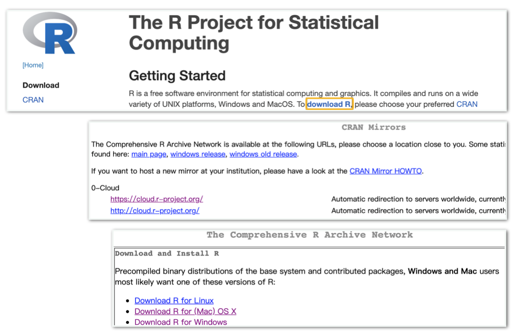
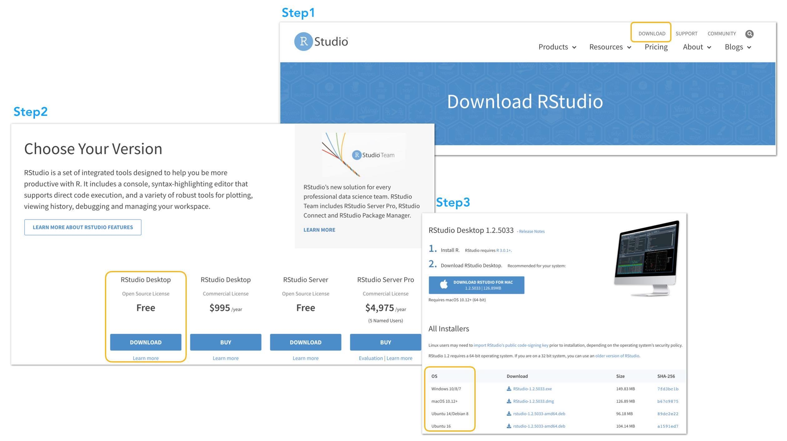
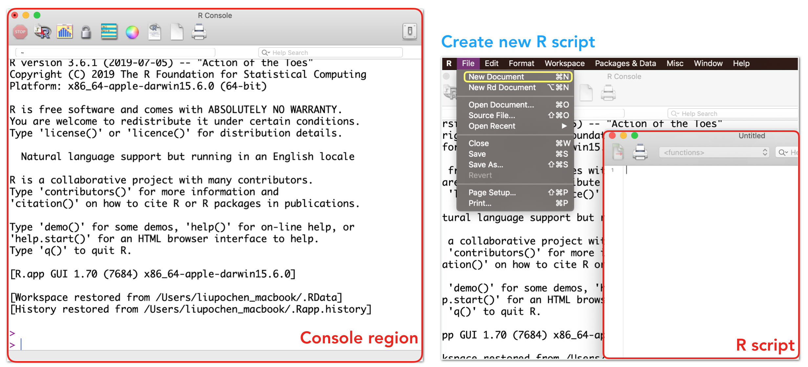
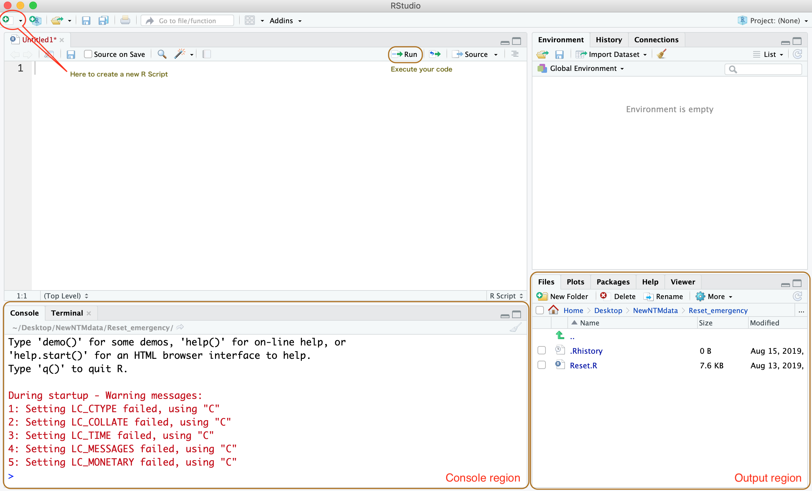

Chapter 1 Strart R
In the first lab of the course of meta-analysis, our goal is to introduce you to R and help you can deal with your datasets with R. You will learn the fundamental concept of R from setting your working directory to importing and saving your data, and the most important thing: install the useful R packages to kick off the work on meta-analysis!
1.1 Introduction
What is R? And why? What can we do with R? R is a programming language for data science. There gives some reasons for R that is especially important.
- Ease of learning
- Free and open-source
- Community of R
- Available to contributed or third party packages
Installing R & RStudio
R software
Go to the homepage of R, https://www.r-project.org/, to downolad the R software. You’ll see this homepage as you go to the website: r-project.org. Click the download R and 0-Cloud will be listed on the top of the mirrors. Hit it then “0-Cloud” will automatically get you to the nearest server by your location.

In the page of “The Conprehensive R Archive Network,” please choose the one that match to your operating system (OS). If you’re OS is Windows system, please click “base” to download R version 3.6.2. If you use the MAC OS X, please download the latest version one “R-3.6.2.pkg.” Then, you’ll go through the routine installing process…
RStudio
After you finished the installation of R, there are many integrated development environment (IDE) for R, here I suggest you to use the cross-platform IDE, RStudio. The RStudio is free and available on https://rstudio.com/. As you go to their homepage, you may see something as following, then click the “DOWNLOAD” In the following page you’ll have to choose the version of RStudio, just hit the Download of “RStudio Desktop” then download the installers that match to your OS.

Start R!
Double clicking the R icon in your computer, you will see only one window which is a R console region. To create a new R script, choose “File” then hit the “New Document”(for MAC OS X) or hit “New script”(for Windows system)

Double clicking the RStudio icon in your computer, you will see a window with four panes. You can redesign the interface in the preferences. When you open the RStudio, there are two main regions, console and output.

You can type your code in the R script or console. The calculated results will show on the console and the plot you draw will show on the output region.
Open script
In R: File → Open script → choose the R lab.R file
In RStudio: File → Open file→ choose the R lab.R file
Install packages
As the mention of the important points of R above, there are many packages which can extend the basic R function and make the works more productive and reproducible. To do a great meta-analysis research, let’s install the meta packages.
Please make sure that the package name should go inside the quotation mark.
After we install these package, we still can not use it yet! You can imagine that R is like a work table which have a plenty of drawers, the step of installing package is just like you buy the tool from the shop then store it in the drawer. So, how can we get the tools on the table? Once you install the package, you can load the package by the library() function.
Getting help
In the output region, you can find out there is one tab with “Help”. You can search the function you would like to use then you’ll see the detail information about the function, like the function description, argument and maybe the example of the function. You can also use the question mark to search for it on the R script or on the console: ?library(). Put the ? in front of the function and run it. The other way is type the name of the function in the help() with the quotation mark: help(“meta”).
Many sources could help you solve your coding problems. If you’re stuck in a problem, please google the problem and add “R” to the searching query. Or you can try to search the problem on the StackOverflow, though, you may have to spend a little bit time to find the one who has the same problem as you.
Read data
Read in a file created by a spreadsheet or database program First set the working directory, then read the file in the directory.
Set the working directory:
Get the working directory:
Read csv file:
Read csv file without setting the working directory:
Be aware of the direction of slashes in R!
In Windows, the file path is placed in back slash format \. But in R, the file path must be in forward slash format / or double backslashes \\. Be aware to convert backslash file path to forward slash or double backslashes.
Save and open a R file (.RData)
Save data into R Data Format:
Read the R dataset:
1.2 meta & metafor packages
You can view all the methods for meta-analysis of meta package by typing help(meta).
Brief introduction of meta packages
Fixed effect and random effects model:
| Description | Usage |
|---|---|
| Meta-analysis of binary outcome data | metabin |
| Meta-analysis of continuous outcome data | metacont |
| Generic inverse variance meta-analysis | metagen |
| Description | Usage |
|---|---|
| Forest plot | forest |
| Funnel plot | funnel |
Exploring biases:
| Description | Usage |
|---|---|
| Egger’s test | metabias |
| Trim and fill method | trimfill |
Brief introduction of metafor packages
| Description | Usage |
|---|---|
| Meta-regression | metare |